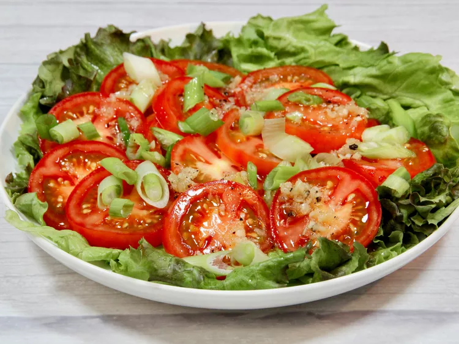

Tomato Salad

Description
Here’s a light tomato salad that is quick and easy, made of sliced tomatoes with a homemade sugar-free dressing. To style this up a bit, serve tomatoes on a lettuce leaf-lined plate.
Ingredients
- 1 tablespoon water
- 2 teaspoons good-quality olive oil
- 2 teaspoons white balsamic vinegar
- 1 teaspoon sugar substitute (such as Splenda®)
- 2 cloves garlic, crushed
- salt and freshly ground black pepper to taste
- 4 ripe tomatoes, sliced
- 3 tablespoons thinly-sliced green onions
Steps
- Add water, olive oil, vinegar, Splenda®, garlic, salt, and pepper to a small bowl, and whisk until well combined.
- Place tomato slices on a plate, and sprinkle green onions over the top. Drizzle dressing over tomatoes, and serve.